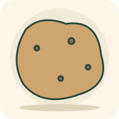
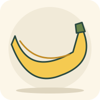

वस्तु और मात्रा
Buying quantities
Audio uses your device’s Hindi voice; availability varies. No native recordings included.आज का नियम
Understand the conceptमात्रा की इकाई और वस्तु का नाम साथ रखें। दर्जन बारह वस्तुओं का समूह है।
शब्द और अर्थ
Vocabularyकिलो
kilogramआधा
halfदर्जन
dozen
टमाटर
tomato
आलू
potato
केला
bananaदाम
priceताज़ा
freshचित्र देखकर बोलो
Picture talkउदाहरण और पठन
Examples & readingआधा किलो टमाटर दीजिए।
एक दर्जन केले चाहिए।
आलू का दाम क्या है?
ये सब्ज़ियाँ ताज़ी हैं।
बोलें और सोचें
Apply itकाल्पनिक सूची बनाएँ और दुकानदार की भूमिका में बोलें।
लेखन अभ्यास
Writing practiceएक किलो आलू दीजिए।
एक किलो आलू दीजिए।
उदाहरण ध्यान से पढ़ें। फिर कॉपी में लिखें और अपने दो नए वाक्य बनाएँ।
अपना ज्ञान जाँचें
Check your learningआधा किलो कितने ग्राम है?
उत्तर देखें
पाँच सौ ग्राम।
इस पाठ में दिए गए अर्थ से शब्द मिलाएँ: kilogram
उत्तर
किलो
कार्यपत्रक · Worksheet
Completion is self-marked and saved locally.